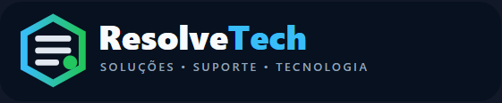

ResolveTech
Um jogo de Suporte Técnico de TI
Construa sua carreira na ResolveTechAprenda, pratique, atenda clientes, documente seu trabalho e evolua profissionalmente.
NÍVEL DE DIFICULDADE
Como você quer jogar?
A dificuldade será vinculada a este novo jogo e registrada no código de Save e na documentação técnica.
INICIAR JOGO
Escolha o modo
Os três modos utilizam a mesma identidade de jogador, mas apresentam objetivos diferentes.
💾 CONTINUAR JOGO
Carregar código de Save
Cole o código mais recente gerado ao concluir uma atividade do Modo História.
ANTES DE COMEÇAR
🎯 Sua missão
📄 DOCUMENTAÇÃO OBRIGATÓRIA
Ordem de Serviço
Na ResolveTech, o atendimento somente é encerrado depois que o serviço é documentado.
Etapa obrigatória: gere a Ordem de Serviço para liberar o avanço.
🏪 MONTAR A OFICINA
Planejamento da Oficina ResolveTech
Monte uma estrutura capaz de atender os chamados mais frequentes sem imobilizar dinheiro em itens de baixo giro.
ORÇAMENTO DE IMPLANTAÇÃOR$ 0Saldo: R$ 0
Planejamento de estoque: ferramentas permanecem na oficina; itens de alto giro justificam estoque mínimo; itens caros ou pouco usados podem ser comprados sob demanda mediante Ordem de Compra.
🚚 Fornecedor — compras sob demanda
Itens de baixa frequência podem ser encomendados quando surgir a necessidade. A Ordem de Compra formaliza essa aquisição.
PROCESSO DE CONTRATAÇÃO
Você foi selecionado para a ResolveTech
Preencha seus dados para emitir o crachá de técnico(a). Ele acompanhará você durante todos os atendimentos.

SERVIÇOS DE TI • TÉCNICO TRAINEE
SEU NOME
RT-2.9.4 • ACESSO TÉCNICO
SIMULADOR EDUCACIONAL
Bem-vindo à ResolveTech
Atenda os clientes, diagnostique antes de trocar peças e siga procedimentos seguros de manutenção.
Modo História20 níveis de treinamento
📚 APRENDER
Biblioteca ResolveTech
Conteúdo técnico da unidade curricular Suporte e Manutenção de Sistemas Computacionais.
🧪 PRATICAR
Oficina Livre
Treine competências específicas. A prática livre não altera pontuação, reputação ou integridade.
🎫 CENTRAL DE CHAMADOS
Help Desk ResolveTech
Analise os chamados e defina corretamente categoria e prioridade.
💾 BACKUP & DEPLOY
Laboratório de Backup, Restore e Clonagem
📊 MONITORAMENTO
Central de Monitoramento
Identifique quais equipamentos exigem investigação ou intervenção.
📄 MEUS DOCUMENTOS
Documentação Técnica
Ordens de serviço, fichas e registros produzidos durante suas atividades na ResolveTech.
🏅 CARREIRA RESOLVETECH
Técnico Trainee
MODO UPGRADE
Laboratório de Upgrade
Escolha um contrato. Cada estação possui gargalos, interfaces e orçamento próprios. Nem sempre o componente mais caro é a melhor solução.
✓ Compatibilidade realista✓ Orçamento limitado✓ Gargalo do software✓ Fonte e interfaces
UPG-01CAD 2D
Escritório de projetos
Inicialização lenta e multitarefa limitada.
8 GB DDR4 • HDD SATA 1 TB • vídeo integrado
Orçamento: R$ 1.800
UPG-02Modelagem 3D
Projetos mecânicos
Montagens 3D maiores estão lentas e a viewport engasga.
i5-8400 • 8 GB DDR4 • GTX 1050 Ti • SSD SATA
Orçamento: R$ 3.000
UPG-03Renderização
Visualização de produto
Modelagem funciona, mas renderizar imagens leva tempo demais.
Ryzen 5 3600 • 16 GB DDR4 • GTX 1650 4 GB • 450 W
Orçamento: R$ 4.300
UPG-04Simulação / CAE
Análise estrutural
Malhas e solucionadores esgotam memória e levam muito tempo.
Ryzen 5 3600 • 16 GB DDR4 • NVMe 500 GB • GPU 6 GB
Orçamento: R$ 5.200
UPG-05Workstation avançada
Engenharia multidisciplinar
Equipe quer consolidar CAD, render e simulação numa estação equilibrada.
Ryzen 7 3700X • 16 GB DDR4 • RTX 2060 6 GB • 550 W
Orçamento: R$ 7.600
CONTRATO
Análise de gargalo
Configuração atual
Objetivo / requisitos
Importante: não é necessário gastar todo o orçamento. Compare gargalo, compatibilidade e custo-benefício.
Planeje o atendimento
ORÇAMENTO AUTORIZADOR$ 0
Escolha você mesmo os componentes. A loja contém opções adequadas, superdimensionadas e incompatíveis.
LOJA • UPGRADE
Loja de componentes ResolveTech
Monte sua solução. A loja não bloqueia escolhas ruins: consultar as especificações faz parte do diagnóstico.
ORÇAMENTOR$ 0Saldo: R$ 0
UPGRADE • BANCADA
Aplicação do upgrade
RAM
Armazenamento
GPU / CPU
Aguardando procedimento...
Qual é a próxima ação?
CONTRATO CONCLUÍDO
Resultado do atendimento
☆☆☆☆☆
ANTES
→
DEPOIS
FASE 1
Diagnóstico
Regra: diagnostique e teste antes de substituir componentes.
Checklist de diagnóstico
Realize todas as verificações. Se encontrar uma falha simples, corrija-a e refaça o diagnóstico.
LOJA DE COMPONENTES
Escolha as peças necessárias
🛒 Carrinho
Nenhum produto selecionado.
BANCADA TÉCNICA
Manutenção
As etapas estão embaralhadas. Clique na próxima ação correta.
Qual é a próxima ação?
Recomeça esta manutenção desde a primeira etapa e preserva a pontuação atual.
FASE CONCLUÍDA
GAME OVER
Atendimento encerrado pela ResolveTech
NÍVEL 6
Chamado e ferramentas
Procedimento técnico
As ações estão embaralhadas. Selecione a próxima etapa correta.
★★★★★
🏆 CERTIFICAÇÃO RESOLVETECH
Campanha concluída
Você concluiu os 20 níveis de treinamento da ResolveTech.
Próxima etapa: a Certificação ResolveTech utilizará chamados mistos sem indicar previamente o tema. Depois dela, o Modo Carreira poderá trabalhar com chamados aleatórios.
ATENDIMENTOS CONCLUÍDOS